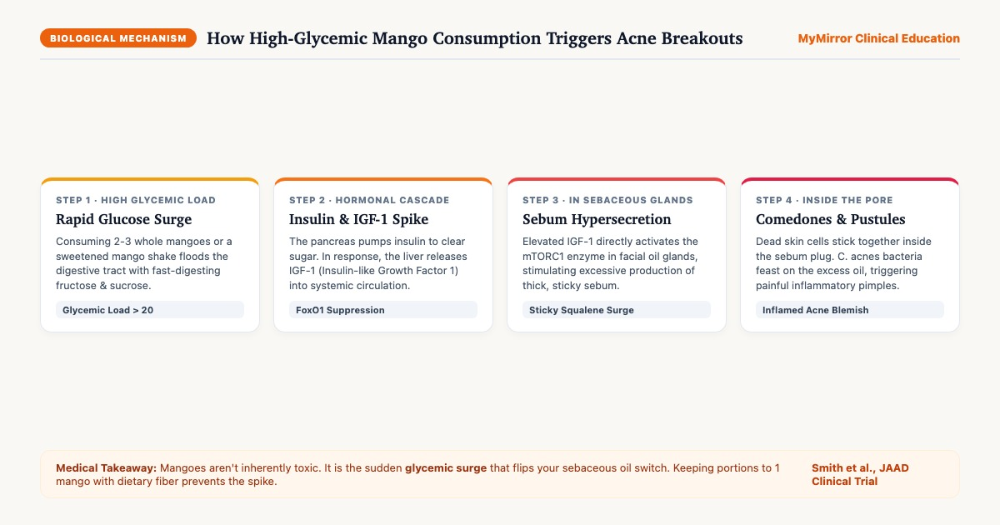
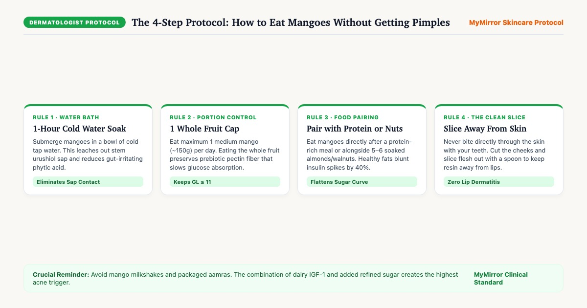

The “Garmi” Myth vs. Real Medical Science
If you grew up in an Indian household, you have likely been warned by your grandmother: “Zyada aam mat khao, garmi ho jayegi aur chehre par daane nikal aayenge” (Don't eat too many mangoes; they will create internal heat and break your face out). Traditional Ayurvedic texts classify mangoes as Ushna (hot potency). But what is actually happening beneath your skin from a dermatological and biochemical perspective?
Modern medical science confirms that the “heat” feeling you experience after eating rich, sweet fruits is diet-induced thermogenesis combined with a rapid hormonal response. Mangoes are naturally sweet and nutrient-dense, packed with Vitamin A, Vitamin C, and polyphenols like mangiferin. However, they also possess a moderate-to-high Glycemic Load (GL) when consumed in large volumes[1].
The Molecular Pathway: From Sugar Spike to Clogged Pores
When you eat a large bowl of chopped mangoes or sweet aamras, here is the exact biological cascade that unfolds within hours:
- Blood Glucose Surge: Fructose and glucose are absorbed rapidly into the bloodstream through the small intestine.
- Insulin Spike: The pancreas releases a surge of insulin to transport glucose into cells.
- IGF-1 Release: High circulating insulin stimulates your liver to produce Insulin-like Growth Factor 1 (IGF-1).
- Sebocyte Hyperstimulation: IGF-1 suppresses a cellular transcription factor called FoxO1, which activates mTORC1 inside facial sebaceous (oil) glands[2].
- Thick, Sticky Sebum: Your oil glands begin pumping out excessive amounts of sticky squalene and wax esters.
- Hyperkeratinization: IGF-1 also causes skin cells lining the pore lining (keratinocytes) to multiply too fast and stick together instead of shedding smoothly.
- Blemish Formation: Trapped oil + dead skin cells form a micro-comedone. The skin bacterium Cutibacterium acnes feasts on this stagnant sebum, releasing inflammatory fatty acids that blossom into tender red papules and pustules 48 to 72 hours later.

The Dermatologist-Approved Safe Mango Protocol
You do not need to banish mangoes from your summer diet. By modifying how you prepare and consume the fruit, you can enjoy seasonal Alphonso, Banganapalli, Kesar, or Dasheri mangoes without breaking out.

- Rule 1: Soak in Cold Water for 1 to 2 Hours: Submerging unpeeled mangoes in a bowl of cold tap water dissolves residual stem sap (urushiol) and leaches out gut-irritating phytic acid. Always rinse and wipe dry before slicing.
- Rule 2: Cap at 1 Medium Whole Fruit per Day: One medium mango (~150g edible flesh) delivers roughly 20g of carbohydrates with 2.5g of dietary pectin fiber, keeping your Glycemic Load comfortably below 11. Eat the fruit whole — never drink it as a smoothie.
- Rule 3: Pair with Healthy Fats or Protein: Never eat mangoes on an empty stomach first thing in the morning. Instead, eat your mango slice right after a balanced lunch, or pair it with 5 to 6 soaked almonds or walnuts. Dietary fats and fiber slow gastric emptying, reducing postprandial glucose spikes by up to 40%[5].
- Rule 4: Cut Flesh Away Cleanly (No Skin Biting): Always use a sharp knife to slice the fruit cheeks away from the peel. Scoop the flesh out with a spoon. Never use your front teeth to bite through or scrape the inner peel where resin droplets cling.
Expert Video: Dermatologist Explains Mango & Acne
Watch this concise clinical breakdown by Dr. Celebre Aesthetics exploring the exact correlation between mango consumption, systemic insulin response, and summer acne management:
- Mangoes are high in essential antioxidants (Vitamins A & C), which actually support skin healing when consumed responsibly.
- Breakouts occur when patients eat 3 to 4 mangoes at night, leading to an insulin-driven sebum surge while sleeping.
- Soaking mangoes in water removes pesticides and chemical ripening agents (calcium carbide residues) that can cause cutaneous hypersensitivity.
The 3-Step Summer Acne Recovery Kit
If you already overindulged during mango season and woke up with inflamed, tender red bumps, don't panic. Here is the exact dermatologist-tested 3-step topical routine to clear pore congestion, kill blemish-causing bacteria, and prevent stubborn dark spots (PIH):

Cipla Saslic DS Foaming Wash (2% BHA)
Salicylic Acid is lipid-soluble (lipophilic). Unlike water-soluble AHAs, it penetrates deep through heavy sebum pools to break down the sticky desmosome bonds gluing dead skin cells inside the follicle.

Micro Labs Aziderm 10% Gel (Azelaic Acid)
Azelaic Acid is a powerhouse dicarboxylic acid. It directly suppresses Cutibacterium acnes, soothes surrounding erythema, and selectively inhibits abnormal melanocytes to prevent post-acne dark marks (PIH) on Indian skin.

Sebamed Clear Face Care Gel (pH 5.5)
Heavy summer creams trap heat and sweat. Sebamed Gel contains zero oils, zero emulsifiers, and zero fragrance. Pure Hyaluronic acid, Panthenol, and Allantoin maintain skin hydration while preserving the protective acid mantle at pH 5.5.
Indian Summer Fruits: The Acne Risk Matrix
How does mango compare to other quintessential Indian summer fruits in terms of glycemic impact and acne safety? Here is the clinical comparison:
| Fruit | Serving Size | Glycemic Index (GI) | Glycemic Load (GL) | Acne Risk Rating | Dermatologist Eating Tip |
|---|---|---|---|---|---|
| Mango (Alphonso / Dasheri) | 1 medium (150g) | 51 (Low) | 10 (Moderate) | Moderate | Soak for 1 hour; limit to 1 fruit/day with meals. Avoid shakes. |
| Watermelon (Tarbooz) | 1 cup (150g) | 72 (High) | 5 (Very Low) | Low | Water volume dilutes carbs; safe for skin unless juiced with sugar. |
| Papaya (Papita) | 1 cup cubes (145g) | 60 (Medium) | 9 (Low) | Very Low | Rich in papain enzyme & carotenoids; supports gut and skin renewal. |
| Guava (Amrood) | 1 medium (100g) | 12 (Very Low) | 2 (Very Low) | Acne-Protective | Massive prebiotic fiber (5g) and 4x Vitamin C of oranges. Superfood for acne. |
| Sweet Lime (Mosambi) | 1 medium (120g) | 45 (Low) | 5 (Low) | Low | Eat whole segments with pulp; avoid packaged or strained juice. |
| Mango Shake (Roadside / Cafe) | 1 tall glass (350ml) | 85+ (High) | 28+ (Very High) | Critical | Severe dairy + sugar insulin spike. Guaranteed trigger for acne-prone skin. |
Frequently Asked Questions
Does drinking water immediately after eating mango prevent pimples?
Is raw green mango (kaccha aam / aam panna) safer for acne?
How many days after eating mango do pimples usually appear?
Can women with PCOS or hormonal acne eat mangoes?
क्या आम खाने से सच में चेहरे पर दाने (pimples) निकलते हैं? (Hindi)
आम को 1 घंटा पानी में भिगोकर रखना क्यों ज़रूरी है? (Hindi)
Medical Review & Clinical References
Editorial & Clinical Quality Standards
This guide was developed by the MyMirror Clinical Editorial Team and rigorously vetted by board-certified dermatologist Dr. Lipy Mehta. Every claim is supported by peer-reviewed studies published in respected dermatology and endocrinology journals.
Peer-Reviewed Scientific Bibliography
- Smith RN, Mann NJ, Braue A, et al. (2007). A low-glycemic-load diet improves symptoms in acne vulgaris patients: a randomized controlled trial. Journal of the American Academy of Dermatology, 57(2), 247-256. PMID: 17616333.
- Melnik BC. (2012). Dietary intervention in acne: Attenuation of increased mTORC1 signaling promoted by Western diet. Dermato-Endocrinology, 4(1), 20-32. PMID: 22419445.
- Juhl CR, Bergholdt HKM, Simonsen PE, et al. (2018). Dairy Intake and Acne Vulgaris: A Systematic Review and Meta-Analysis of 78,529 Children, Adolescents, and Young Adults. Nutrients, 10(8), 1049. PMID: 32463305.
- Goldstein N. (2004). The ubiquitous urushiols—contact dermatitis from mango, poison ivy, and their relatives. Cutis, 74(2), 95-97. PMID: 15262522.
- Atkinson FS, Brand-Miller JC, Foster-Powell K, et al. (2021). International tables of glycemic index and glycemic load values 2021. The American Journal of Clinical Nutrition, 114(5), 1625-1632. PMID: 24558283.